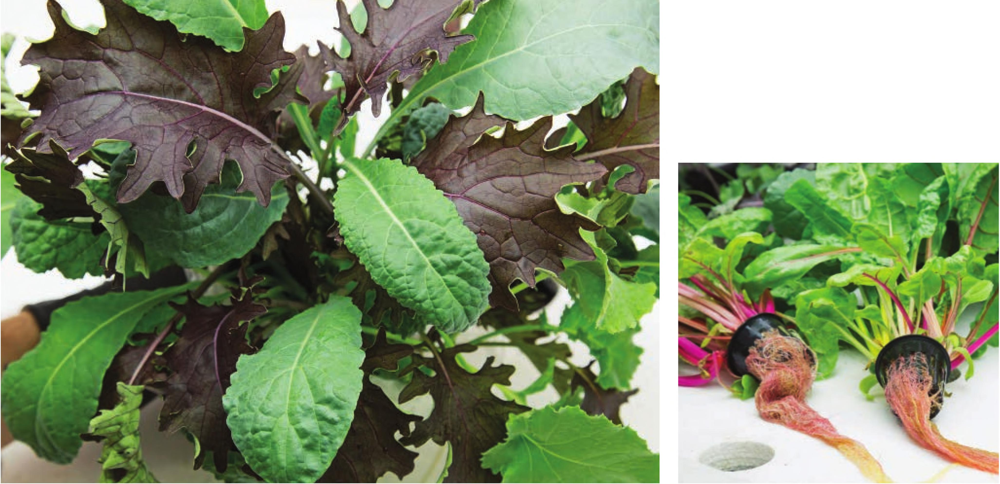

Mix of red kale and Toscano kale Bright Lights Swiss chard ADDITIONAL LEAFY GREENS Variety Name Recommended DIY Systems Germination Temperatures Air Temperatures Water Temperatures EC pH Ruby Red B, F, W, N, T, M, FD, A, V 75-90°F 55-95°F 60-85°F 1.2-2. 3 5. 5-6.5 Swiss Chard Note: Full sun. Bright Lights B, F, W, N, T, M, FD, A, V 75-90°F 55-95°F 60-85°F 1.2-2. 3 5. 5-6. 5 Decorticated Chard Notes: Very fun crop. The root color matches the stem color. Full sun. F, W, N, T, M, FD, A, V 75-85°F 60-85°F 65-80°F 1.2-2. 3 5.5-6. 5 Amara Mustard Notes: Huge fast growth. Scarlet Frills B, F, W, N, T, M, FD, A, V 75-85°F 60-85°F 65-80°F 1.2-2. 3 5.5-6. 5 Mustard Notes: Vigorous growth, good color, strong flavor. B, F, W, N, T, M, FD, A, V 75-85°F 60-85°F 65-80°F 1.2-2. 3 5. 5-6. 5 Mizuna Notes: Fast growing and beautiful. W, N, T, M, FD, A, V 65-75°F 60-75°F 65-75°F 1.0-1. 8 5. 5-6.0 Astro Arugula Notes: Some tolerance to heat, , but still can be difficult to grow in hydroponics. This is a good variety for arugula microgreens. Sylvetta W, N, T, M, FD, A, V 65-75°F 60-75°F 65-75°F 1.0-1. 8 5. 5-6.0 Arugula Notes: Slow growing but great taste. Difficult crop to grow in hydroponics. Celery (Variety F, W, N, T, M, FD, A, V 70-75°F 60-70°F 65-80°F 1. 2-2.3 5. 5-6.5 Conquistador) Notes: Tastes great and can be harvested multiple times. B, F, W, N, T, M, FD, A, V 55-75°F 60-85°F 65-75°F 1. 2-2.3 5. 5-6.0 Upland Cress Notes: Fast growing. Taste is similar to arugula. CROP SELECTION CHARTS 183
